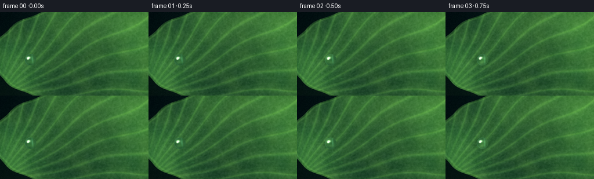
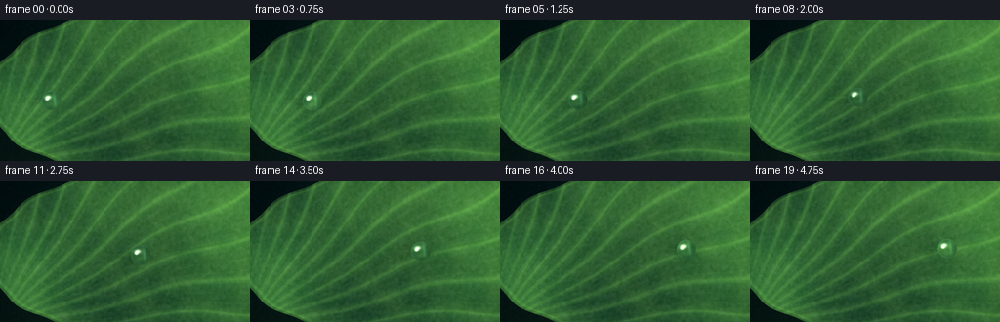

CODING AGENTS AS PIXEL WORLD MODELS
traex/DeepSeek-V4.1-Flash · phygen_036
点击播放 · 原生 RGB 像素
逐轮保存的候选
回放视频、检查图与代码变化。
每份候选均可单独播放。实际图片检查记录在下方工具轨迹中。
候选 01播放与检查图
点击播放 · 原生 RGB 像素


展开代码变化
--- 上一保存版本
+++ 本次保存版本
@@ -0,0 +1,342 @@
+"""Procedural macro video: a dewdrop sliding over a lotus leaf."""
+
+from pathlib import Path
+
+import cv2
+import numpy as np
+from PIL import Image, ImageFilter
+from scipy.ndimage import gaussian_filter, map_coordinates
+
+import artifact_io
+
+
+ROOT = Path(__file__).resolve().parent
+WIDTH = 256
+HEIGHT = 144
+N_FRAMES = 20
+FPS = 4.0
+SS = 4
+W = WIDTH * SS
+H = HEIGHT * SS
+
+
+def smoothstep(edge0, edge1, x):
+ t = np.clip((x - edge0) / (edge1 - edge0), 0.0, 1.0)
+ return t * t * (3.0 - 2.0 * t)
+
+
+def normalize01(a, low=1.0, high=99.0):
+ lo, hi = np.percentile(a, [low, high])
+ return np.clip((a - lo) / max(hi - lo, 1e-8), 0.0, 1.0)
+
+
+def soft_ellipse(x, y, cx, cy, rx, ry):
+ return np.sqrt(((x - cx) / rx) ** 2 + ((y - cy) / ry) ** 2)
+
+
+def make_background(rng):
+ yy, xx = np.mgrid[0:H, 0:W]
+ x = xx / (W - 1)
+ y = yy / (H - 1)
+
+ base = np.zeros((H, W, 3), dtype=np.float32)
+ base[..., 0] = 4 + 7 * x + 3 * y
+ base[..., 1] = 17 + 13 * x + 5 * y
+ base[..., 2] = 17 + 10 * x
+
+ glow = np.exp(-(((x - 0.92) / 0.38) ** 2 + ((y - 0.12) / 0.42) ** 2))
+ base += glow[..., None] * np.array([13, 20, 7], dtype=np.float32)
+
+ for _ in range(12):
+ bx, by = rng.uniform(-0.05, 1.05), rng.uniform(-0.05, 1.05)
+ br = rng.uniform(0.018, 0.075)
+ strength = rng.uniform(1.0, 4.5)
+ spot = np.exp(-(((x - bx) ** 2 + (y - by) ** 2) / (br * br)))
+ tint = rng.uniform(0.55, 1.0, size=3) * np.array([0.28, 1.0, 0.82])
+ base += spot[..., None] * tint * strength
+
+ fog = gaussian_filter(rng.normal(size=(H, W)).astype(np.float32), 60 * SS)
+ fog = normalize01(fog)
+ base += (fog - 0.5)[..., None] * np.array([4, 8, 6], dtype=np.float32)
+ return np.clip(base, 0, 255)
+
+
+def make_leaf(rng):
+ yy, xx = np.mgrid[0:H, 0:W]
+ x = xx / (W - 1)
+ y = yy / (H - 1)
+
+ # The leaf sweeps in from the lower left, leaving dark water in two corners.
+ boundary_noise = gaussian_filter(rng.normal(size=(H, W)).astype(np.float32), 30 * SS)
+ boundary_noise = normalize01(boundary_noise) - 0.5
+ q = soft_ellipse(x, y, 0.68, 0.53, 0.735, 0.635)
+ q += boundary_noise * 0.045
+ q += 0.011 * np.sin(16.0 * np.arctan2(y - 0.53, x - 0.68) + 0.9)
+ mask = q <= 1.0
+
+ coarse = normalize01(gaussian_filter(rng.normal(size=(H, W)).astype(np.float32), 34 * SS))
+ medium = normalize01(gaussian_filter(rng.normal(size=(H, W)).astype(np.float32), 6.5 * SS))
+ fine = normalize01(gaussian_filter(rng.normal(size=(H, W)).astype(np.float32), 1.1 * SS))
+
+ # A wet waxy green with a restrained yellow-green sheen.
+ dark = np.array([15, 52, 34], dtype=np.float32)
+ mid = np.array([38, 101, 51], dtype=np.float32)
+ light = np.array([93, 146, 65], dtype=np.float32)
+ leaf = dark + (mid - dark) * coarse[..., None]
+ leaf += (light - leaf) * (0.16 + 0.22 * medium[..., None])
+ leaf += (fine[..., None] - 0.5) * 13.0
+
+ light_side = smoothstep(-0.3, 1.1, 0.75 * x - 0.55 * y)
+ leaf += light_side[..., None] * np.array([19, 24, 5], dtype=np.float32)
+ leaf -= smoothstep(0.45, 1.0, y)[..., None] * np.array([5, 9, 3], dtype=np.float32)
+
+ # Broad radial veins originate just outside the lower-left corner.
+ hx, hy = -0.035 * W, 1.06 * H
+ dx = xx - hx
+ dy = yy - hy
+ radius = np.hypot(dx, dy)
+ theta = np.arctan2(dy, dx)
+ theta_w = theta + 0.022 * np.sin(radius / (27 * SS) + 0.8)
+
+ vein_core = np.zeros((H, W), dtype=np.float32)
+ vein_halo = np.zeros((H, W), dtype=np.float32)
+ for index, angle in enumerate(np.linspace(-1.52, -0.08, 11)):
+ diff = np.arctan2(np.sin(theta_w - angle), np.cos(theta_w - angle))
+ distance = radius * np.abs(diff)
+ width = (1.25 + (0.38 if index % 3 == 0 else 0.0)) * SS
+ core = np.exp(-0.5 * (distance / width) ** 2)
+ halo = np.exp(-0.5 * (distance / (4.3 * SS)) ** 2)
+ visible = smoothstep(14 * SS, 42 * SS, radius) * smoothstep(-0.1, 0.14, x)
+ vein_core += core * visible
+ vein_halo += halo * visible
+
+ for angle in np.linspace(-1.52, -0.08, 34):
+ diff = np.arctan2(np.sin(theta_w - angle), np.cos(theta_w - angle))
+ distance = radius * np.abs(diff)
+ fine_line = np.exp(-0.5 * (distance / (0.48 * SS)) ** 2)
+ vein_halo += fine_line * smoothstep(20 * SS, 55 * SS, radius) * 0.34
+
+ vein_core = np.clip(vein_core, 0, 1.7)
+ vein_halo = np.clip(vein_halo, 0, 1.6)
+ vein_shadow = np.roll(vein_core, int(1.1 * SS), axis=1) - np.roll(vein_core, int(1.1 * SS), axis=0)
+ leaf -= vein_shadow[..., None] * np.array([3, 8, 5], dtype=np.float32)
+ leaf += vein_halo[..., None] * np.array([8, 13, 5], dtype=np.float32)
+ leaf += vein_core[..., None] * np.array([15, 20, 8], dtype=np.float32)
+
+ # Cellular, slightly striated wax texture.
+ cells = (
+ np.sin(theta_w * 97.0 + radius / (6.5 * SS) + medium * 4.0)
+ * np.sin(radius / (2.8 * SS) - fine * 5.0)
+ )
+ leaf += cells[..., None] * 1.8
+
+ # Raised edge: dark lip, warm inner rim, and a narrow reflected sky line.
+ edge_distance = np.abs(q - 1.0)
+ edge_dark = np.exp(-0.5 * (edge_distance / 0.017) ** 2)
+ edge_light = np.exp(-0.5 * ((q - 0.972) / 0.008) ** 2)
+ leaf -= edge_dark[..., None] * np.array([10, 20, 11], dtype=np.float32)
+ leaf += edge_light[..., None] * np.array([15, 22, 8], dtype=np.float32)
+
+ # Broad, soft daylight reflection across the waxy surface.
+ sheen = np.exp(-(((x - 0.78) / 0.30) ** 2 + ((y - 0.20) / 0.23) ** 2))
+ leaf += sheen[..., None] * np.array([9, 13, 6], dtype=np.float32)
+
+ bg = make_background(rng)
+ result = bg.copy()
+ result[mask] = leaf[mask]
+
+ # A few defocused peripheral beads give scale without competing with the hero drop.
+ bead_specs = [
+ (0.30, 0.80, 2.8, 0.45),
+ (0.25, 0.68, 1.8, 0.30),
+ (0.39, 0.87, 2.2, 0.30),
+ (0.15, 0.48, 1.6, 0.24),
+ (0.86, 0.86, 2.1, 0.22),
+ ]
+ for bx, by, radius, opacity in bead_specs:
+ bead = np.exp(-0.5 * (((x - bx) / (radius / WIDTH)) ** 2 + ((y - by) / (radius / WIDTH)) ** 2) ** 2)
+ bead *= mask * opacity
+ result += bead[..., None] * np.array([15, 27, 18], dtype=np.float32)
+ glint = np.exp(
+ -0.5
+ * (
+ ((x - (bx - radius * 0.24 / WIDTH)) / (radius * 0.20 / WIDTH)) ** 2
+ + ((y - (by - radius * 0.28 / WIDTH)) / (radius * 0.15 / WIDTH)) ** 2
+ )
+ )
+ result += (glint * mask * opacity)[..., None] * np.array([42, 55, 35], dtype=np.float32)
+
+ return np.clip(result, 0, 255), mask, x, y
+
+
+def drop_center(frame):
+ t = frame / (N_FRAMES - 1)
+ eased = t * t * (3.0 - 2.0 * t)
+ x = 0.205 + 0.585 * eased + 0.006 * np.sin(2 * np.pi * t)
+ y = 0.565 - 0.075 * eased + 0.013 * np.sin(2 * np.pi * (0.72 * t + 0.06))
+ return x, y
+
+
+def draw_wet_wake(base, frame, cx, cy, rx, ry):
+ """Subtle dark, glossy trace behind the moving bead."""
+ yy, xx = np.mgrid[0:H, 0:W]
+ t = frame / (N_FRAMES - 1)
+ wake_length = (22 + 9 * np.sin(np.pi * t)) * SS
+ width = (4.2 + 1.0 * np.sin(np.pi * t)) * SS
+ start = cx - wake_length
+ center_y = cy + 0.8 * SS
+ envelope = smoothstep(start - width, start + width * 0.3, xx)
+ envelope *= 1.0 - smoothstep(cx - rx * 0.72, cx - rx * 0.25, xx)
+ envelope *= np.exp(-0.5 * ((yy - center_y) / width) ** 2)
+ envelope *= (0.25 + 0.75 * smoothstep(0, wake_length, xx - start))
+ base -= envelope[..., None] * np.array([7, 13, 8], dtype=np.float32)
+
+ streak = np.exp(-0.5 * ((yy - (center_y - 0.9 * SS)) / (0.7 * SS)) ** 2)
+ streak *= envelope
+ base += streak[..., None] * np.array([10, 15, 9], dtype=np.float32)
+ return base
+
+
+def draw_drop(base, mask, frame):
+ cx_n, cy_n = drop_center(frame)
+ cx, cy = cx_n * (W - 1), cy_n * (H - 1)
+
+ yy, xx = np.mgrid[0:H, 0:W]
+ dx = xx - cx
+ dy = yy - cy
+ angle = -0.11 + 0.05 * np.sin(2 * np.pi * frame / N_FRAMES)
+ ca, sa = np.cos(angle), np.sin(angle)
+ xr_raw = (ca * dx + sa * dy)
+ yr_raw = (-sa * dx + ca * dy)
+
+ speed = abs(drop_center(min(frame + 1, N_FRAMES - 1))[0] - drop_center(max(frame - 1, 0))[0])
+ stretch = np.clip(0.055 + speed * 0.28, 0.05, 0.10)
+ rx = (9.3 * (1.0 + stretch)) * SS
+ ry = (10.2 * (1.0 - stretch * 0.55)) * SS
+ xr = xr_raw / rx
+ yr = yr_raw / ry
+ rho2 = xr * xr + yr * yr
+ inside = rho2 <= 1.0
+ nz = np.sqrt(np.clip(1.0 - rho2, 0.0, 1.0))
+
+ # Refraction: the bead inverts and compresses the leaf image behind it.
+ warp = 0.58 * (0.35 + 0.65 * nz)
+ sample_x = cx - xr_raw * warp - 0.8 * SS
+ sample_y = cy - yr_raw * warp + 0.7 * SS
+ channels = []
+ for channel in range(3):
+ channels.append(
+ map_coordinates(
+ base[..., channel],
+ [sample_y, sample_x],
+ order=1,
+ mode="reflect",
+ )
+ )
+ refracted = np.stack(channels, axis=-1)
+
+ # Shadow and transmitted light on the leaf around the bead.
+ soft = gaussian_filter(inside.astype(np.float32), 3.5 * SS)
+ shadow = np.roll(soft, int(2.6 * SS), axis=1)
+ shadow = np.roll(shadow, int(2.0 * SS), axis=0)
+ base -= (shadow * mask * 0.23)[..., None] * np.array([11, 20, 14], dtype=np.float32)
+
+ contact = np.exp(-0.5 * (((xr - 0.10) / 0.88) ** 2 + ((yr - 0.64) / 0.15) ** 2))
+ base -= (contact * inside * 0.38)[..., None] * np.array([8, 15, 10], dtype=np.float32)
+ caustic = np.exp(-0.5 * (((xr + 0.06) / 0.62) ** 2 + ((yr - 0.72) / 0.20) ** 2))
+ base += (caustic * inside * 0.22)[..., None] * np.array([31, 40, 19], dtype=np.float32)
+
+ body = refracted.copy()
+ body *= (0.76 + 0.31 * nz[..., None])
+ body += np.array([5, 16, 17], dtype=np.float32) * (0.08 + 0.12 * nz[..., None])
+ body -= np.clip(yr[..., None] * 0.5 + 0.5, 0, 1) * np.array([7, 8, 5], dtype=np.float32)
+
+ # Thin cyan rim and a warm Fresnel edge.
+ fresnel = (1.0 - nz) ** 2.6
+ rim = fresnel * (0.44 + 0.56 * smoothstep(-0.8, 0.8, -xr - 0.25 * yr))
+ body += rim[..., None] * np.array([32, 68, 59], dtype=np.float32)
+ body -= (fresnel * 0.16)[..., None] * np.array([4, 3, 8], dtype=np.float32)
+
+ # Multiple specular reflections make the bead read as liquid rather than glass.
+ main_glint = np.exp(-0.5 * (((xr + 0.30) / 0.20) ** 2 + ((yr + 0.38) / 0.13) ** 2))
+ crown = np.exp(-0.5 * (((xr + 0.42) / 0.10) ** 2 + ((yr + 0.20) / 0.08) ** 2))
+ sky_streak = np.exp(-0.5 * (((xr - 0.35) / 0.11) ** 2 + ((yr + 0.12) / 0.50) ** 2))
+ under_glow = np.exp(-0.5 * (((xr + 0.03) / 0.42) ** 2 + ((yr - 0.43) / 0.16) ** 2))
+ body += (main_glint * 1.10)[..., None] * np.array([208, 226, 197], dtype=np.float32)
+ body += (crown * 1.38)[..., None] * np.array([236, 242, 218], dtype=np.float32)
+ body += (sky_streak * 0.28)[..., None] * np.array([70, 125, 113], dtype=np.float32)
+ body += (under_glow * 0.17)[..., None] * np.array([68, 86, 42], dtype=np.float32)
+
+ alpha = inside.astype(np.float32)
+ result = base.copy()
+ result = result * (1.0 - alpha[..., None]) + np.clip(body, 0, 255) * alpha[..., None]
+ return np.clip(result, 0, 255), (cx, cy, rx, ry, angle)
+
+
+def finish_image(image, frame):
+ # Slight optical softness, then a restrained macro-photography grade.
+ pil = Image.fromarray(np.clip(image, 0, 255).astype(np.uint8))
+ pil = pil.resize((WIDTH, HEIGHT), Image.Resampling.LANCZOS)
+ pil = pil.filter(ImageFilter.GaussianBlur(0.24))
+ arr = np.asarray(pil).astype(np.float32)
+
+ yy, xx = np.mgrid[0:HEIGHT, 0:WIDTH]
+ x = xx / (WIDTH - 1)
+ y = yy / (HEIGHT - 1)
+ vignette = 1.0 - 0.16 * smoothstep(0.40, 0.95, np.hypot((x - 0.53) * 1.08, (y - 0.49) * 0.82))
+ arr *= vignette[..., None]
+
+ # Gentle cool-shadow / warm-highlight split tone.
+ luminance = arr.mean(axis=2, keepdims=True) / 255.0
+ shadows = np.clip(1.0 - luminance * 2.1, 0, 1)
+ highlights = np.clip(luminance * 2.0 - 0.65, 0, 1)
+ arr += shadows * np.array([-1.0, 0.8, 2.2], dtype=np.float32)
+ arr += highlights * np.array([3.0, 2.1, -1.0], dtype=np.float32)
+
+ # Fine sensor grain, deterministic per frame.
+ rng = np.random.default_rng(2700 + frame)
+ grain = gaussian_filter(rng.normal(size=(HEIGHT, WIDTH)).astype(np.float32), 0.45)
+ arr += grain[..., None] * 1.7
+ return np.clip(arr, 0, 255).astype(np.uint8)
+
+
+def render():
+ rng = np.random.default_rng(1036)
+ base, leaf_mask, _, _ = make_leaf(rng)
+ frames = []
+ for frame in range(N_FRAMES):
+ cx_n, cy_n = drop_center(frame)
+ speed = abs(drop_center(min(frame + 1, N_FRAMES - 1))[0] - drop_center(max(frame - 1, 0))[0])
+ stretch = np.clip(0.055 + speed * 0.28, 0.05, 0.10)
+ rx = 9.3 * (1.0 + stretch) * SS
+ ry = 10.2 * (1.0 - stretch * 0.55) * SS
+ working = draw_wet_wake(base.copy(), frame, cx_n * (W - 1), cy_n * (H - 1), rx, ry)
+ rendered, _ = draw_drop(working, leaf_mask, frame)
+ frames.append(finish_image(rendered, frame))
+
+ frames = np.stack(frames, axis=0)
+ assert frames.shape == (N_FRAMES, HEIGHT, WIDTH, 3)
+ assert frames.dtype == np.uint8
+ return frames
+
+
+def encode_mp4(frames):
+ path = ROOT / "video.mp4"
+ writer = cv2.VideoWriter(
+ str(path),
+ cv2.VideoWriter_fourcc(*"mp4v"),
+ FPS,
+ (WIDTH, HEIGHT),
+ )
+ if not writer.isOpened():
+ return
+ for frame in frames:
+ writer.write(cv2.cvtColor(frame, cv2.COLOR_RGB2BGR))
+ writer.release()
+
+
+if __name__ == "__main__":
+ video_frames = render()
+ artifact_io.save(video_frames, ROOT)
+ encode_mp4(video_frames)
+ print(f"wrote {N_FRAMES} frames, {WIDTH}x{HEIGHT} @ {FPS:g} fps")
候选 02播放与检查图
点击播放 · 原生 RGB 像素

展开代码变化
--- 上一保存版本
+++ 本次保存版本
@@ -322,17 +322,29 @@
def encode_mp4(frames):
path = ROOT / "video.mp4"
- writer = cv2.VideoWriter(
- str(path),
- cv2.VideoWriter_fourcc(*"mp4v"),
- FPS,
- (WIDTH, HEIGHT),
- )
- if not writer.isOpened():
- return
- for frame in frames:
- writer.write(cv2.cvtColor(frame, cv2.COLOR_RGB2BGR))
- writer.release()
+ try:
+ import imageio
+
+ imageio.mimwrite(
+ path,
+ [np.ascontiguousarray(frame) for frame in frames],
+ fps=FPS,
+ codec="libx264",
+ quality=8,
+ pixelformat="yuv420p",
+ macro_block_size=1,
+ )
+ except Exception:
+ # MP4V is a portable fallback for minimal local OpenCV installs.
+ writer = cv2.VideoWriter(
+ str(path),
+ cv2.VideoWriter_fourcc(*"mp4v"),
+ FPS,
+ (WIDTH, HEIGHT),
+ )
+ for frame in frames:
+ writer.write(cv2.cvtColor(frame, cv2.COLOR_RGB2BGR))
+ writer.release()
if __name__ == "__main__":
可观测工具轨迹
实际执行的命令与返回图片。
命令 1exit 0
/bin/bash -c "pwd && rg --files -g 'prompt.txt' -g 'GENERATION_RULES.md' -g 'task_spec.json' -g '"'!node_modules'"' -g '"'!vendor'"'"
命令 2exit 0
/bin/bash -c 'ls -la'
命令 3exit 0
/bin/bash -c 'cat prompt.txt'
命令 4exit 0
/bin/bash -c 'cat GENERATION_RULES.md'
命令 5exit 0
/bin/bash -c 'cat task_spec.json'
命令 6exit 0
/bin/bash -c "sed -n '1,240p' artifact_io.py"
命令 7exit 0
/bin/bash -c "python - <<'PY'
import importlib.util
for name in ['numpy','PIL','scipy','cv2','imageio','matplotlib']:
print(name, bool(importlib.util.find_spec(name)))
PY"命令 8exit 0
/bin/bash -c 'ffmpeg -version | head -n 2'
命令 9exit 0
/bin/bash -c "sed -n '1,240p' player_template.html"
命令 10exit 0
/bin/bash -c 'python generate.py'
命令 11exit 0
/bin/bash -c 'command -v chafa || command -v viu || command -v jp2 || command -v img2txt || true'
命令 12exit 0
/bin/bash -c "python - <<'PY'
from PIL import Image
import numpy as np
chars=' .,:;irsXA253hMHGS#9B&@'
for f in [0,5,10,15,19]:
im=np.asarray(Image.open(f'frames/{f:02d}.png').convert('L').resize((96,40), Image.Resampling.LANCZOS))
print('\\nFRAME',f)
for row in im:
print(''.join(chars[min(len(chars)-1,int(v/256*len(chars)))] for v in row))
PY"命令 13exit 0
/bin/bash -c "python - <<'PY'
from pathlib import Path
from PIL import Image
import numpy as np
files=sorted(Path('frames').glob('*.png'))
arr=np.stack([np.asarray(Image.open(f)) for f in files])
print('frames',arr.shape,'range',arr.min(),arr.max(),'mean/std',arr.mean().round(2),arr.std().round(2))
print('frame means',arr.mean(axis=(1,2,3)).round(2).tolist())
print('motion absdiff',np.abs(np.diff(arr.astype(np.int16),axis=0)).mean(axis=(1,2,3)).round(2).tolist())
print('unique colors/frame',[len(np.unique(a.reshape(-1,3),axis=0)) for a in arr])
for name in ['pixels.npz','index.html','inspection.png','transition_check.png','video.mp4']:
p=Path(name); print(name,p.exists(),p.stat().st_size if p.exists() else None)
PY"命令 14exit 0
/bin/bash -c "python - <<'PY'
from PIL import Image
im=Image.open('frames/09.png')
im.resize((1024,576),Image.Resampling.NEAREST).save('.tmp/frame09_large.png')
PY"命令 15exit 0
/bin/bash -c "python - <<'PY'
from PIL import Image
import numpy as np
chars=' .,:;irsXA253hMHGS#9B&@'
im=np.asarray(Image.open('frames/09.png'))
# color-quantized emulation with per-char brightness and xterm-ish foreground omitted
for f in [0,9,19]:
a=np.asarray(Image.open(f'frames/{f:02d}.png'))
# crop full frame, upscale nearest in sampling
for yy in range(0,144,4):
row=''
for xx in range(0,256,3):
p=a[yy:yy+4,xx:xx+3].mean(axis=(0,1)); lum=p@np.array([.2126,.7152,.0722])
row+=chars[min(len(chars)-1,int(lum/256*len(chars)))]
print(row)
print()
PY"命令 16exit 0
/bin/bash -c "python - <<'PY' import importlib.util for name in ['torch','torchvision','skimage','moviepy']: print(name,bool(importlib.util.find_spec(name))) PY"
命令 17exit 1
/bin/bash -c "python - <<'PY'
from pathlib import Path
import json
import cv2
import numpy as np
from PIL import Image
root = Path('.')
spec = json.loads((root / 'task_spec.json').read_text())
frames = np.stack([np.asarray(Image.open(p).convert('RGB')) for p in sorted((root / 'frames').glob('*.png'))])
packed = np.load(root / 'pixels.npz')['pixels']
decoded = np.stack([(packed[..., i] >> 16) & 255 for i in [0]], axis=-1)
# Reconstruct all channels from the packed tensor for an exact artifact check.
rgb = np.stack([(packed >> 16) & 255, (packed >> 8) & 255, packed & 255], axis=-1).transpose(0, 2, 1, 3)
assert frames.shape == (spec['frames'], spec['height'], spec['width'], 3)
assert np.array_equal(frames, rgb)
cap = cv2.VideoCapture('video.mp4')
assert cap.isOpened()
assert int(cap.get(cv2.CAP_PROP_FRAME_COUNT)) == spec['frames']
assert (int(cap.get(cv2.CAP_PROP_FRAME_WIDTH)), int(cap.get(cv2.CAP_PROP_FRAME_HEIGHT))) == (spec['width'], spec['height'])
assert abs(cap.get(cv2.CAP_PROP_FPS) - spec['fps']) < 0.01
cap.release()
assert 'window.__pixelReady=true' in (root / 'index.html').read_text()
print('PASS: 20 RGB frames, 256x144, 4 fps; pixels.npz/index.html/video.mp4 verified')
PY"命令 18exit 1
/bin/bash -c "python - <<'PY'
from pathlib import Path
import json
import cv2
import numpy as np
from PIL import Image
root = Path('.')
spec = json.loads((root / 'task_spec.json').read_text())
frames = np.stack([np.asarray(Image.open(p).convert('RGB')) for p in sorted((root / 'frames').glob('*.png'))])
packed = np.load(root / 'pixels.npz')['pixels']
rgb = np.stack([(packed >> 16) & 255, (packed >> 8) & 255, packed & 255], axis=-1)
assert frames.shape == (spec['frames'], spec['height'], spec['width'], 3)
assert np.array_equal(frames, rgb)
cap = cv2.VideoCapture('video.mp4')
assert cap.isOpened()
assert int(cap.get(cv2.CAP_PROP_FRAME_COUNT)) == spec['frames']
assert (int(cap.get(cv2.CAP_PROP_FRAME_WIDTH)), int(cap.get(cv2.CAP_PROP_FRAME_HEIGHT))) == (spec['width'], spec['height'])
assert abs(cap.get(cv2.CAP_PROP_FPS) - spec['fps']) < 0.01
cap.release()
assert 'window.__pixelReady=true' in (root / 'index.html').read_text()
print('PASS: 20 RGB frames, 256x144, 4 fps; pixels.npz/index.html/video.mp4 verified')
PY"命令 19exit 1
/bin/bash -c "python - <<'PY'
from pathlib import Path
import json
import numpy as np
from PIL import Image
frames=np.stack([np.asarray(Image.open(p)) for p in sorted(Path('frames').glob('*.png'))])
packed=np.load('pixels.npz')['pixels']
print(frames.shape,packed.shape,packed.dtype)
print('expected axes values', frames[0,0,0], packed[0,0], [(int(packed[0,0])>>16)&255,(int(packed[0,0])>>8)&255,int(packed[0,0])&255])
print('frame5 center',frames[5,72,128],packed[72,128,5])
PY"命令 20exit 0
/bin/bash -c "python - <<'PY'
from pathlib import Path
import numpy as np
from PIL import Image
frames=np.stack([np.asarray(Image.open(p)) for p in sorted(Path('frames').glob('*.png'))])
packed=np.load('pixels.npz')['pixels']
rgb=np.stack([(packed>>16)&255,(packed>>8)&255,packed&255],axis=-1).transpose(2,0,1,3)
print(frames.shape,rgb.shape,np.array_equal(frames,rgb))
print(frames[0,0,0],rgb[0,0,0])
PY"命令 21exit 0
/bin/bash -c 'python generate.py'
命令 22exit 0
/bin/bash -c "python - <<'PY'
from pathlib import Path
import json
import cv2
import numpy as np
from PIL import Image
root = Path('.')
spec = json.loads((root / 'task_spec.json').read_text())
files = sorted((root / 'frames').glob('*.png'))
frames = np.stack([np.asarray(Image.open(p).convert('RGB')) for p in files])
packed = np.load(root / 'pixels.npz')['pixels']
rgb = np.stack([(packed >> 16) & 255, (packed >> 8) & 255, packed & 255], axis=-1).transpose(2, 0, 1, 3)
assert frames.shape == (spec['frames'], spec['height'], spec['width'], 3), frames.shape
assert np.array_equal(frames, rgb)
cap = cv2.VideoCapture('video.mp4')
assert cap.isOpened()
count = int(cap.get(cv2.CAP_PROP_FRAME_COUNT))
size = (int(cap.get(cv2.CAP_PROP_FRAME_WIDTH)), int(cap.get(cv2.CAP_PROP_FRAME_HEIGHT)))
fps = cap.get(cv2.CAP_PROP_FPS)
cap.release()
assert count == spec['frames'], count
assert size == (spec['width'], spec['height']), size
assert abs(fps - spec['fps']) < 0.01, fps
html = (root / 'index.html').read_text()
assert 'window.__pixelReady=true' in html
assert len((root / 'audio.wav').read_bytes()) if (root / 'audio.wav').exists() else True
print(f'PASS: {len(files)} RGB frames, {size[0]}x{size[1]}, {fps:g} fps')
print('PASS: frames match pixels.npz; index.html payload ready; video.mp4 metadata valid')
print('video.mp4 bytes:', (root / 'video.mp4').stat().st_size)
PY"保存候选 2 份；完成命令 22 次；可验证图片返回 0 张。原始 API 响应与完整日志保留在本地。